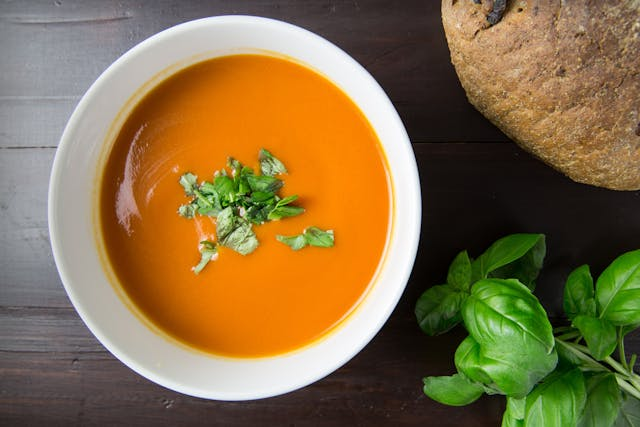

Velouté Potimarron

A photo by Foodie Factor on pexels.com
Description
Une recette de soupe velouté au potimarron pour se reconforter quand il fait froid.
Ingrédients
- 1 potimarron
- 3 oignons
- 2 pommes de terre
- 10cl de crème fraiche
Etapes
- Enlever l'écorce et découper le potimarron
- Eplucher et couper les pommes de terre
- Faire revenir les oignons dans une marmitte
- Ajouter le reste des ingrédients et couvrir d'eau
- Laisser mijoter 30 minutes puis ajouter la crème
Home